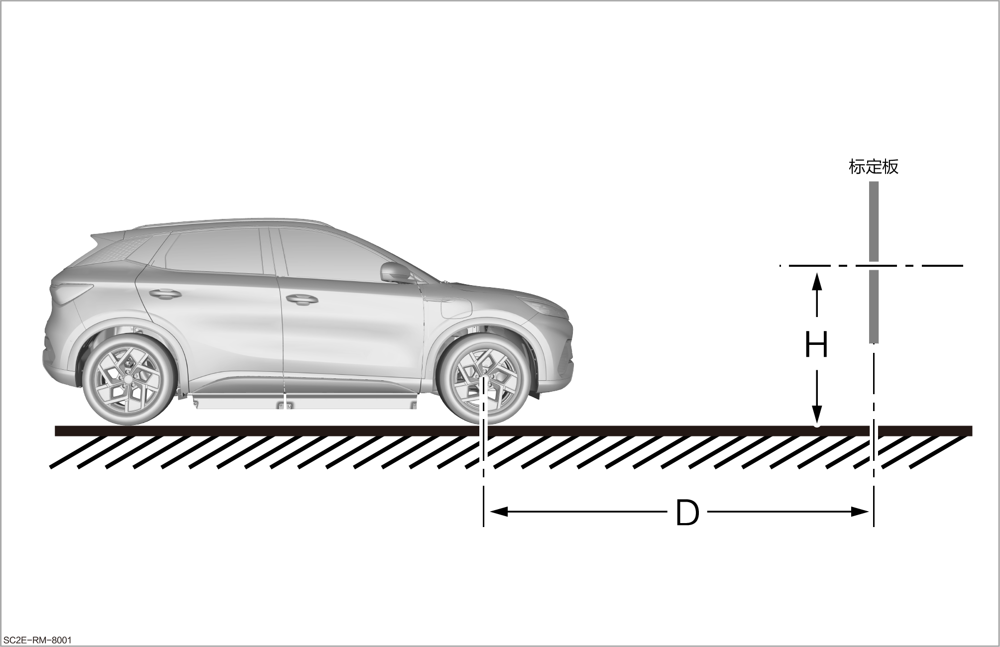
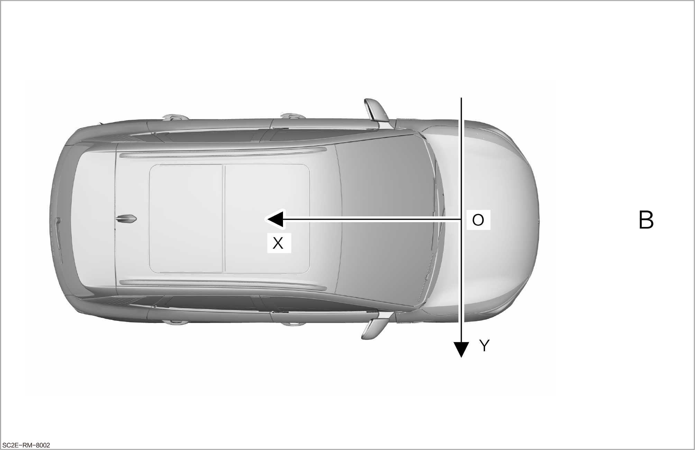

Calibration of Multifunction Video Control Module (Veoneer Optional)
Static Calibration

After replacing the faulty components of millimeter wave radar, configuration writing and external parameter calibration are required to the ensure the normal driving assistance. Use a VDS to the perform the calibration.
-
Before starting the calibration, properly arrange the position between the calibration plate and the vehicle.
-
The distance from the front axle of the vehicle to the calibration plate is D: 6000mm.
-
The height from the center of the calibration plate to the ground is H: 1449mm.
-
The distance in Y direction from the center of vehicle front axle to the center of calibration plate is B: 0mm.
-
Requirements for the installation error of calibration plate:
Axial movement
X
Y
Z
Error value
±40mm
±10mm
±10mm
Angle error
Yaw angle
Pitch angle
Roll angle
Error value
±0.5°
±0.5°
±0.5°
 -
-
Drive the vehicle to the designated calibration site.
-
Use a VDS to connect the vehicle OBD interface. Refer to the VDS Instructions
Reminder OBD interface is located at left lower corner of left lower guard plate of instrument panel.
OBD interface is located at left lower corner of left lower guard plate of instrument panel.
-
Set the vehicle power supply to OK, enter "Vehicle Diagnostic System", and select the vehicle model.
-
Select “Passenger Vehicles”.
-
Select "Corresponding Vehicle Series".
-
After the automatic scanning is completed, find the display entry for "Multifunction Video Controller Assembly (Veoneer)" in the interface and tap the More button at the far right of the entry to the enter the menu interface of the "Multifunction Video Controller Assembly (Veoneer)" node, and tap "Write Corresponding Vehicle and Region Configuration" to the write the configuration bits.
-
VDS feeds back "Successful Writing" after the configuration bits are successfully written.
-
Before the calibration, select "Read VIN".
-
After reading the VIN, return to the menu interface of the "Multifunction Video Controller Assembly (Veoneer)" node.
-
Check and ensure that the vehicle meets the following calibration conditions:
-
The four-wheel alignment is done.
-
The camera is properly installed.
-
The configuration bits have not been erased and have been written properly.
-
The camera is in normal working condition.
-
The vehicle is stationary and the vehicle power supply is set to ON.
-
When calibrating, the vehicle must be unloaded.
-
Ensure that the tire pressure is correct.
-
Set the vehicle to P-gear.
-
-
Select "Start Aftersales Calibration" and ensure sufficient light and no obstruction between the camera and the calibration plate during the calibration process.
-
Calibration completed: the last result read as "normal" indicates successful calibration, and the fault light on the instrument display interface goes out. The Diplot setting item will operate normally after multimedia restarts self-learning.
Determine if the calibration is successful
-
After completing the aftersales calibration of the multifunction video controller, determine whether the calibration is successful.
-
Calibration failed: tap Fault Detection to check whether "C121100 No Calibration Data" is indicated. If so, recalibrate it.
-
Calibration succeed: tap Fault Detection to check whether "C121100 No Calibration Data" is indicated. If not, the calibration is successful.